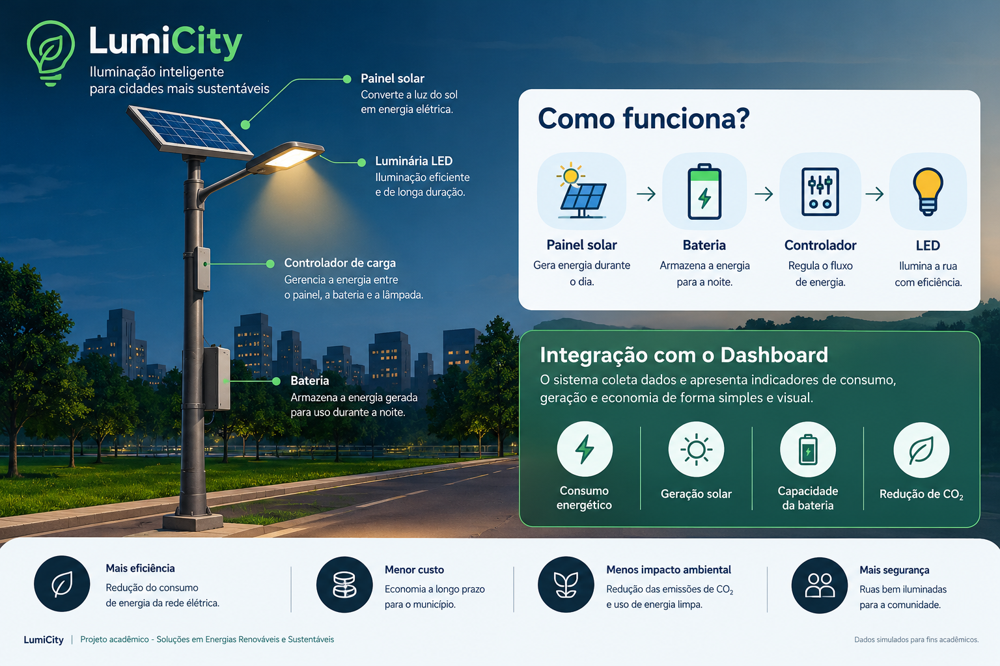

Consumo — vapor de sódio
907,2
kWh/mês
Comparação de três alternativas para uma rua hipotética em São Paulo, considerando 15 postes e 12 horas de funcionamento por noite.
Resultados calculados pela simulação Python
Consumo ou demanda mensal estimada para os 15 postes
As barras comparam a demanda mensal das luminárias. No cenário solar, essa demanda não representa consumo da rede elétrica.
Com as potências adotadas, o LED conectado à rede consome aproximadamente 52,4% menos energia que o cenário de vapor de sódio.
Configuração de referência simulada por poste
